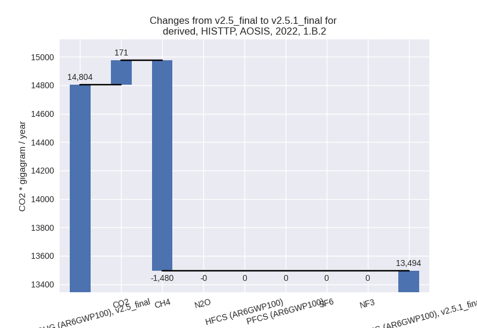

Changes in PRIMAP-hist v2.5.1_final compared to v2.5_final for AOSIS
2024-02-29
Johannes Gütschow
Change analysis for AOSIS for PRIMAP-hist v2.5.1_final compared to v2.5_final
Overview over emissions by sector and gas
The following figures show the aggregate national total emissions excluding LULUCF AR6GWP100 for the country reported priority scenario. The dotted linesshow the v2.5_final data.
The following figures show the aggregate national total emissions excluding LULUCF AR6GWP100 for the third party priority scenario. The dotted linesshow the v2.5_final data.
Overview over changes
In the country reported priority scenario we have the following changes for aggregate Kyoto GHG and national total emissions excluding LULUCF (M.0.EL):
- Emissions in 2022 have changed by -2.8%% (-8041.37 Gg CO2 / year)
- Emissions in 1990-2022 have changed by -1.0%% (-2436.22 Gg CO2 / year)
In the third party priority scenario we have the following changes for aggregate Kyoto GHG and national total emissions excluding LULUCF (M.0.EL):
- Emissions in 2022 have changed by 3.5%% (10702.95 Gg CO2 / year)
- Emissions in 1990-2022 have changed by -0.9%% (-2507.95 Gg CO2 / year)
Most important changes per scenario and time frame
In the country reported priority scenario the following sector-gas combinations have the highest absolute impact on national total KyotoGHG (AR6GWP100) emissions in 2022 (top 5):
- 1: 1.B.2, CH4 with -3097.91 Gg CO2 / year (-16.4%)
- 2: 1.A, CO2 with -1844.31 Gg CO2 / year (-1.2%)
- 3: 4, CH4 with -782.68 Gg CO2 / year (-3.0%)
- 4: M.AG.ELV, CH4 with -675.99 Gg CO2 / year (-14.5%)
- 5: 1.B.2, CO2 with -632.10 Gg CO2 / year (-43.9%)
In the country reported priority scenario the following sector-gas combinations have the highest absolute impact on national total KyotoGHG (AR6GWP100) emissions in 1990-2022 (top 5):
- 1: 1.A, CO2 with -1784.71 Gg CO2 / year (-1.3%)
- 2: 1.B.2, CH4 with -363.60 Gg CO2 / year (-2.2%)
- 3: 2, CO2 with -201.86 Gg CO2 / year (-1.0%)
- 4: 1.A, CH4 with 53.29 Gg CO2 / year (4.4%)
- 5: M.AG.ELV, CO2 with -44.22 Gg CO2 / year (-18.8%)
In the third party priority scenario the following sector-gas combinations have the highest absolute impact on national total KyotoGHG (AR6GWP100) emissions in 2022 (top 5):
- 1: 1.A, CO2 with 16595.28 Gg CO2 / year (10.5%)
- 2: M.AG.ELV, N2O with -2488.86 Gg CO2 / year (-19.5%)
- 3: 1.B.2, CH4 with -1480.50 Gg CO2 / year (-10.3%)
- 4: 3.A, CH4 with -637.80 Gg CO2 / year (-3.0%)
- 5: M.AG.ELV, CH4 with -598.51 Gg CO2 / year (-11.5%)
In the third party priority scenario the following sector-gas combinations have the highest absolute impact on national total KyotoGHG (AR6GWP100) emissions in 1990-2022 (top 5):
- 1: M.AG.ELV, N2O with -2116.00 Gg CO2 / year (-17.8%)
- 2: 1.A, CO2 with -662.49 Gg CO2 / year (-0.4%)
- 3: 2, N2O with 661.97 Gg CO2 / year (22.8%)
- 4: 1.B.2, CH4 with -237.02 Gg CO2 / year (-1.8%)
- 5: 2, CO2 with -109.04 Gg CO2 / year (-0.5%)
Notes on data changes
No country specific notes present for this changelog.
Changes by sector and gas
For each scenario and time frame the changes are displayed for all individual sectors and all individual gases. In the sector plot we use aggregate Kyoto GHGs in AR6GWP100. In the gas plot we usenational total emissions without LULUCF. ## country reported scenario
2022
1990-2022

third party scenario
2022
1990-2022
Detailed changes for the scenarios:
country reported scenario (HISTCR):
Most important changes per time frame
For 2022 the following sector-gas combinations have the highest absolute impact on national total KyotoGHG (AR6GWP100) emissions in 2022 (top 5):
- 1: 1.B.2, CH4 with -3097.91 Gg CO2 / year (-16.4%)
- 2: 1.A, CO2 with -1844.31 Gg CO2 / year (-1.2%)
- 3: 4, CH4 with -782.68 Gg CO2 / year (-3.0%)
- 4: M.AG.ELV, CH4 with -675.99 Gg CO2 / year (-14.5%)
- 5: 1.B.2, CO2 with -632.10 Gg CO2 / year (-43.9%)
For 1990-2022 the following sector-gas combinations have the highest absolute impact on national total KyotoGHG (AR6GWP100) emissions in 1990-2022 (top 5):
- 1: 1.A, CO2 with -1784.71 Gg CO2 / year (-1.3%)
- 2: 1.B.2, CH4 with -363.60 Gg CO2 / year (-2.2%)
- 3: 2, CO2 with -201.86 Gg CO2 / year (-1.0%)
- 4: 1.A, CH4 with 53.29 Gg CO2 / year (4.4%)
- 5: M.AG.ELV, CO2 with -44.22 Gg CO2 / year (-18.8%)
Changes in the main sectors for aggregate KyotoGHG (AR6GWP100) are
- 1: Total sectoral emissions in 2022 are 178651.48
Gg CO2 / year which is 63.7% of M.0.EL emissions. 2022 Emissions have
changed by -3.1% (-5728.41 Gg CO2 /
year). 1990-2022 Emissions have changed by -1.4% (-2141.98 Gg CO2 / year). For 2022
the changes per gas
are:
The changes come from the following subsectors:- 1.A: Total sectoral emissions in 2022 are 158022.85 Gg CO2 / year which is 88.5% of category 1 emissions. 2022 Emissions have changed by -1.0% (-1668.62 Gg CO2 / year). 1990-2022 Emissions have changed by -1.3% (-1740.44 Gg CO2 / year).
- 1.B.1: Total sectoral emissions in 2022 are 4071.45
Gg CO2 / year which is 2.3% of category 1 emissions. 2022 Emissions have
changed by -7.5% (-329.49 Gg CO2 /
year). 1990-2022 Emissions have changed by -0.4% (-13.06 Gg CO2 / year). For 2022 the
changes per gas
are:
There is no subsector information available in PRIMAP-hist. - 1.B.2: Total sectoral emissions in 2022 are
16557.17 Gg CO2 / year which is 9.3% of category 1 emissions. 2022
Emissions have changed by -18.4%
(-3730.31 Gg CO2 / year). 1990-2022 Emissions have changed by -2.0% (-388.48 Gg CO2 / year). For 2022
the changes per gas
are:
For 1990-2022 the changes per gas are:
There is no subsector information available in PRIMAP-hist.
- 2: Total sectoral emissions in 2022 are 37104.45 Gg CO2 / year which is 13.2% of M.0.EL emissions. 2022 Emissions have changed by -0.5% (-203.07 Gg CO2 / year). 1990-2022 Emissions have changed by -0.7% (-187.73 Gg CO2 / year).
- M.AG: Total sectoral emissions in 2022 are 37038.29
Gg CO2 / year which is 13.2% of M.0.EL emissions. 2022 Emissions have
changed by -3.5% (-1360.64 Gg CO2 /
year). 1990-2022 Emissions have changed by -0.2% (-84.67 Gg CO2 / year). For 2022 the
changes per gas
are:
The changes come from the following subsectors:- 3.A: Total sectoral emissions in 2022 are 22605.09 Gg CO2 / year which is 61.0% of category M.AG emissions. 2022 Emissions have changed by -1.3% (-289.10 Gg CO2 / year). 1990-2022 Emissions have changed by -0.0% (-1.76 Gg CO2 / year).
- M.AG.ELV: Total sectoral emissions in 2022 are
14433.20 Gg CO2 / year which is 39.0% of category M.AG emissions. 2022
Emissions have changed by -6.9%
(-1071.54 Gg CO2 / year). 1990-2022 Emissions have changed by -0.6% (-82.90 Gg CO2 / year). For 2022 the
changes per gas
are:
There is no subsector information available in PRIMAP-hist.
- 4: Total sectoral emissions in 2022 are 25824.89 Gg
CO2 / year which is 9.2% of M.0.EL emissions. 2022 Emissions have
changed by -3.0% (-794.83 Gg CO2 /
year). 1990-2022 Emissions have changed by -0.1% (-23.94 Gg CO2 / year). For 2022 the
changes per gas
are:
- 5: Total sectoral emissions in 2022 are 2027.03 Gg
CO2 / year which is 0.7% of M.0.EL emissions. 2022 Emissions have
changed by 2.3% (45.58 Gg CO2 /
year). 1990-2022 Emissions have changed by 0.1% (2.09 Gg CO2 / year). For 2022 the
changes per gas
are:
third party scenario (HISTTP):
Most important changes per time frame
For 2022 the following sector-gas combinations have the highest absolute impact on national total KyotoGHG (AR6GWP100) emissions in 2022 (top 5):
- 1: 1.A, CO2 with 16595.28 Gg CO2 / year (10.5%)
- 2: M.AG.ELV, N2O with -2488.86 Gg CO2 / year (-19.5%)
- 3: 1.B.2, CH4 with -1480.50 Gg CO2 / year (-10.3%)
- 4: 3.A, CH4 with -637.80 Gg CO2 / year (-3.0%)
- 5: M.AG.ELV, CH4 with -598.51 Gg CO2 / year (-11.5%)
For 1990-2022 the following sector-gas combinations have the highest absolute impact on national total KyotoGHG (AR6GWP100) emissions in 1990-2022 (top 5):
- 1: M.AG.ELV, N2O with -2116.00 Gg CO2 / year (-17.8%)
- 2: 1.A, CO2 with -662.49 Gg CO2 / year (-0.4%)
- 3: 2, N2O with 661.97 Gg CO2 / year (22.8%)
- 4: 1.B.2, CH4 with -237.02 Gg CO2 / year (-1.8%)
- 5: 2, CO2 with -109.04 Gg CO2 / year (-0.5%)
Changes in the main sectors for aggregate KyotoGHG (AR6GWP100) are
- 1: Total sectoral emissions in 2022 are 195455.09
Gg CO2 / year which is 62.5% of M.0.EL emissions. 2022 Emissions have
changed by 8.2% (14845.92 Gg CO2 /
year). 1990-2022 Emissions have changed by -0.5% (-911.22 Gg CO2 / year). For 2022
the changes per gas
are:
The changes come from the following subsectors:- 1.A: Total sectoral emissions in 2022 are 177624.08
Gg CO2 / year which is 90.9% of category 1 emissions. 2022 Emissions
have changed by 10.2% (16471.49 Gg
CO2 / year). 1990-2022 Emissions have changed by -0.4% (-663.27 Gg CO2 / year). For 2022
the changes per gas
are:
There is no subsector information available in PRIMAP-hist. - 1.B.1: Total sectoral emissions in 2022 are 4336.86
Gg CO2 / year which is 2.2% of category 1 emissions. 2022 Emissions have
changed by -6.8% (-315.79 Gg CO2 /
year). 1990-2022 Emissions have changed by -0.3% (-12.33 Gg CO2 / year). For 2022 the
changes per gas
are:
There is no subsector information available in PRIMAP-hist. - 1.B.2: Total sectoral emissions in 2022 are
13494.14 Gg CO2 / year which is 6.9% of category 1 emissions. 2022
Emissions have changed by -8.8%
(-1309.78 Gg CO2 / year). 1990-2022 Emissions have changed by -1.5% (-235.62 Gg CO2 / year). For 2022
the changes per gas
are:

There is no subsector information available in PRIMAP-hist.
- 1.A: Total sectoral emissions in 2022 are 177624.08
Gg CO2 / year which is 90.9% of category 1 emissions. 2022 Emissions
have changed by 10.2% (16471.49 Gg
CO2 / year). 1990-2022 Emissions have changed by -0.4% (-663.27 Gg CO2 / year). For 2022
the changes per gas
are:
- 2: Total sectoral emissions in 2022 are 48561.99 Gg CO2 / year which is 15.5% of M.0.EL emissions. 2022 Emissions have changed by -0.0% (-14.51 Gg CO2 / year). 1990-2022 Emissions have changed by 1.8% (563.43 Gg CO2 / year).
- M.AG: Total sectoral emissions in 2022 are 36292.44
Gg CO2 / year which is 11.6% of M.0.EL emissions. 2022 Emissions have
changed by -9.5% (-3798.56 Gg CO2 /
year). 1990-2022 Emissions have changed by -5.7% (-2151.04 Gg CO2 / year). For 2022
the changes per gas
are:
For 1990-2022 the changes per gas are:
The changes come from the following subsectors:- 3.A: Total sectoral emissions in 2022 are 21124.44
Gg CO2 / year which is 58.2% of category M.AG emissions. 2022 Emissions
have changed by -3.0% (-656.42 Gg
CO2 / year). 1990-2022 Emissions have changed by -0.1% (-25.84 Gg CO2 / year). For 2022 the
changes per gas
are:
There is no subsector information available in PRIMAP-hist. - M.AG.ELV: Total sectoral emissions in 2022 are
15168.00 Gg CO2 / year which is 41.8% of category M.AG emissions. 2022
Emissions have changed by -17.2%
(-3142.15 Gg CO2 / year). 1990-2022 Emissions have changed by -12.4% (-2125.21 Gg CO2 / year). For 2022
the changes per gas
are:
For 1990-2022 the changes per gas are:
There is no subsector information available in PRIMAP-hist.
- 3.A: Total sectoral emissions in 2022 are 21124.44
Gg CO2 / year which is 58.2% of category M.AG emissions. 2022 Emissions
have changed by -3.0% (-656.42 Gg
CO2 / year). 1990-2022 Emissions have changed by -0.1% (-25.84 Gg CO2 / year). For 2022 the
changes per gas
are:
- 4: Total sectoral emissions in 2022 are 29864.91 Gg CO2 / year which is 9.6% of M.0.EL emissions. 2022 Emissions have changed by -1.2% (-377.31 Gg CO2 / year). 1990-2022 Emissions have changed by -0.1% (-11.28 Gg CO2 / year).
- 5: Total sectoral emissions in 2022 are 2329.33 Gg
CO2 / year which is 0.7% of M.0.EL emissions. 2022 Emissions have
changed by 2.1% (47.42 Gg CO2 /
year). 1990-2022 Emissions have changed by 0.1% (2.15 Gg CO2 / year). For 2022 the
changes per gas
are: